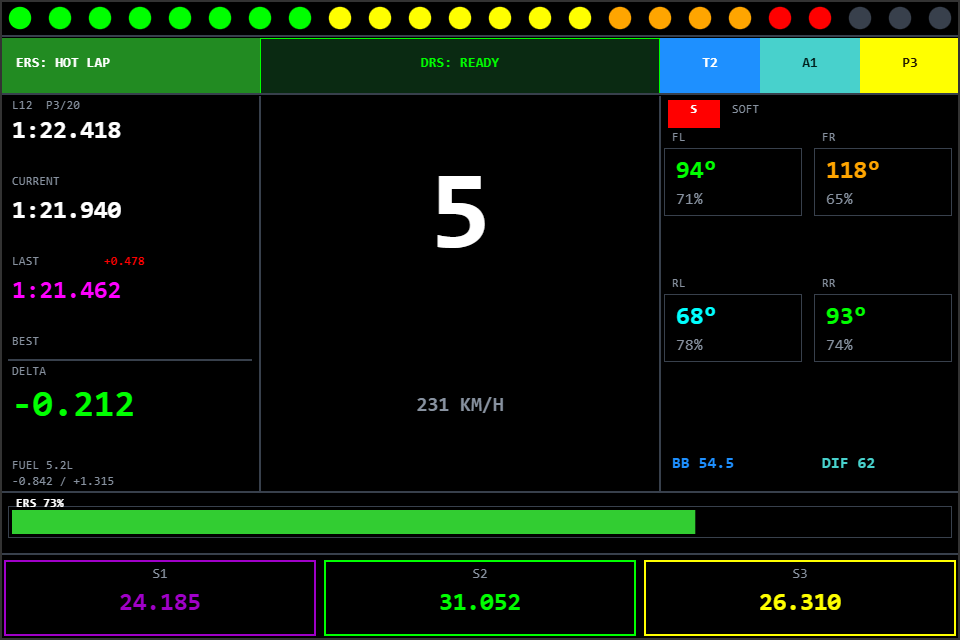
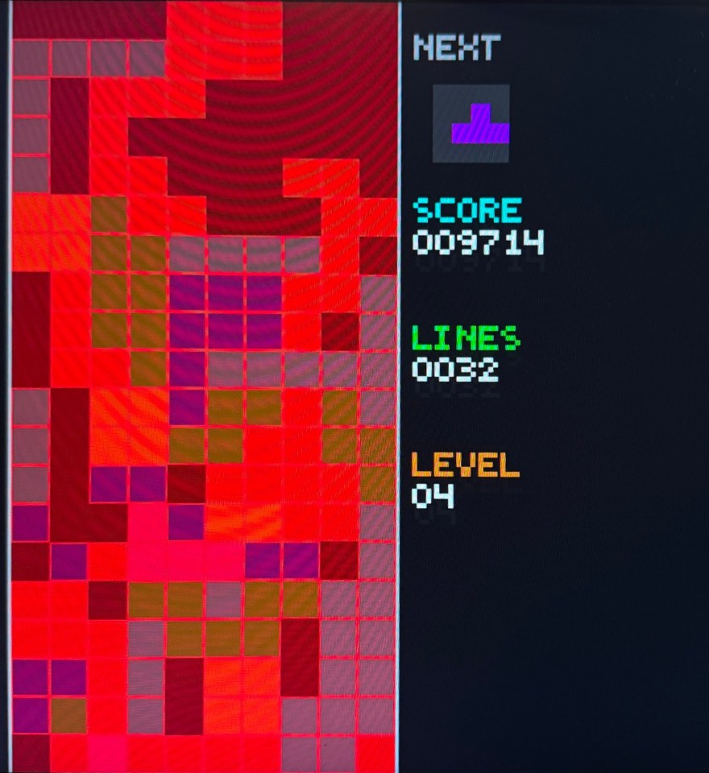

The physics and rendering system behind this site's own hero canvas: momentum-conserving collisions, inverse-square cursor gravity, the hero text as collision geometry, black-hole mergers that radiate gravitational waves, and the performance work behind it.
ABOUT
Computer Engineering at UIUC with a Data Science minor (AI/ML), graduating May 2027. I write software that has to run on real hardware.
I enjoy building projects that have to actually work. I have trained a machine learning model for 3D print failure classification, written the autonomous navigation software for a competition VEX robot, and designed the PCB for an ESP32 racing dashboard.
Currently looking for internships in software engineering, embedded systems, ML engineering, or robotics, and open to wherever the work is interesting.
- 1.4 msper frame to run this page's physics engine
- 8 yrswriting software for competition robots
- 1.2ktests behind a multi-tenant bot service (Catan Tracker)
Stack
- Languages
- CC++PythonJavaSystemVerilogJavaScriptSQL
- ML / CV
- PyTorchTensorFlowscikit-learnOpenCVYOLOONNX RuntimeNumPyPandas
- Embedded
- ESP32ArduinoPROS (VEX V5)FPGA / VivadoKiCadPlatformIO
- Infra
- PostgreSQLDockerLinuxGitGitHub Actionspytest
WORK
Camera-based print failure detection for a Voron Trident on Klipper/Moonraker. A YOLO26 model feeds a temporal decision engine that suppresses false positives: 10,000 ticks of nominal noise produced zero false triggers.
F1-style sim racing DDU merged into ESP-SimHub as a real feature (ARQ transport + Custom Serial Protocol), on a custom through-hole PCB with an ILI9488/XPT2046 display and dual PWM wind-simulation fans.

Three seasons of C++ autonomy for Illini VEX Robotics: Pure Pursuit path following, tracking-wheel odometry, and dual-IMU Kalman fusion. Qualified for the 2024, 2025, and 2026 VEX U World Championship.
A Discord bot that runs a Catan league: confirmed game reports, per-player score sheets over DM, win-rate seasons with a loser-buys-dinner payout, and game-night RSVPs. Async Python on PostgreSQL with least-privilege roles and an AST test that fails the build on dynamically built SQL.
C++ desktop app with libcurl live data feeds and a custom ImGui candlestick chart renderer. Sub-second refresh with a memory-mapped ring buffer.
Full Tetris in SystemVerilog on a Spartan-7 Urbana board. Parallel collision checks with wall kicks, single-cycle line clears, a ghost piece, and a framebuffer-less HDMI renderer, with USB keyboard input handled by a MicroBlaze soft core.

Regression models over 21k+ race rows predicting lap-time delta from pit strategy variables. R² = 0.32, with statistical significance tested through bootstrapped CIs.
A deliberately small PyTorch BiLSTM (851k params) for WNUT-2020 Task 2: is a COVID-19 tweet informative or not? 76.8% accuracy on the 2,000-tweet test set.
An Elden Ring-inspired third-person action game with timing-based combat: anim-notify-driven hit windows, chainable combo attacks, four-directional dodging, and a lock-on targeting system, fighting a Behavior Tree-driven boss.
EXPERIENCE
-
- Present
Shop Supervisor Current
The Shop, Siebel Center for Design, UIUC
Previously Shop Attendant
- Supervise fabrication and prototyping at UIUC's design and innovation hub.
- Help students and researchers with tools, equipment, and rapid-prototyping workflows.
-
- Present
Programming Advisor & Full-Stack Developer Current
Illini VEX Robotics, UIUC
Previously Programming Lead
- As Programming Lead, led the software team for UIUC's competitive VEX U team across a shared codebase for two robots per season.
- Wrote the dual-IMU Kalman fusion and PID controller, and co-wrote the asynchronous motion library (write-up).
- World Championship qualifications in 2024, 2025, and 2026.
- Now advise the programming team as Programming Advisor.
-
- Present
Co-Founder & Mentor Current
RoboHawks Robotics Club (FIRST Tech Challenge), Jericho, NY
Previously Captain & Programmer
- Co-founded a FIRST Tech Challenge team with 4 members at one school and grew it to a dozen across multiple Long Island schools.
- Led the team as Captain and Programmer from Rover Ruckus (2018-19) through POWERPLAY (2022-23).
- Now mentor students in embedded programming, autonomous systems, and competition strategy.
-
-
Captain & Programmer
Jericho VEX Robotics Club, Jericho, NY
- Led the team as Captain and primary programmer.
- Designed control software and autonomous routines, and taught members Java and robot kinematics.
CONTACT
LET'S
WORK
TOGETHER.
Open to internship opportunities in ML engineering, robotics, or systems software. Always happy to talk about interesting problems.
Open to opportunities